Transfer Assembly (4WD) Disassembly |
| 1. Remove Transfer & Transaxle Setting Stud Bolt |
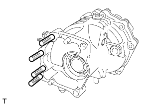 |
Remove the 4 stud bolts.
| 2. Install Transfer Assembly |
 |
Install the transfer assembly to the overhaul attachment.
| 3. Remove Transfer Case Straight Pin |
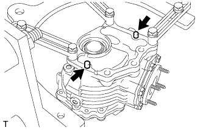 |
Remove the 2 transfer case straight pins.
| 4. Remove Transfer Case Plug NO.1 |
 |
Remove transfer case plug No.1 and the gasket.
| 5. Remove Transfer Drain Plug |
 |
Using socket hexagon wrench 10, remove the transfer drain plug and gasket.
| 6. Remove Transfer Case Plug NO.2 |
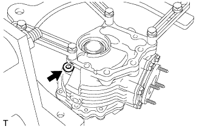 |
Using socket hexagon wrench 10, remove transfer case plug No.2 (filler plug) and the gasket.
| 7. Remove Transfer Case Oil Seal |
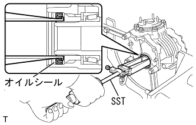 |
Using SST, remove the transfer case oil seal from the transfer case.
| 8. Remove Transfer Case Oil Seal RH |
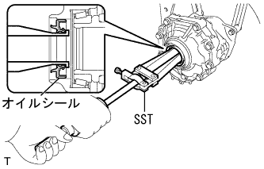 |
Using SST, remove the transfer case oil seal RH from the transfer case.
| 9. Inspect Total Preload |
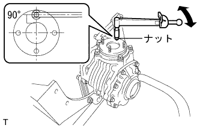 |
Install the nut to the stud bolt.
Using a torque wrench, inspect the turning torque (total preload) with the driven pinion and ring gear tooth surfaces in contact.
| 10. Inspect Backlash |
 |
Insert a dial indicator through the transfer case plug No.2 hole and place it perpendicular to the tip of the ring gear tooth surface.
While holding the transfer output shaft by hand, turn the transfer ring gear mounting case back and forth by hand to measure the backlash between the ring gear and driven pinion.
| 11. Remove Transfer Case Cover NO.1 |
 |
Remove the 8 bolts.
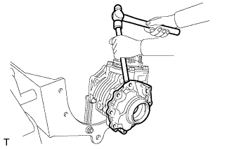 |
Using a brass bar and hammer, remove transfer case cover No.1 from the transfer case.
| 12. Remove Transfer Ring Gear |
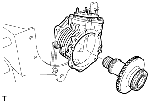 |
Remove the transfer ring gear from the transfer case.
| 13. Remove Transfer Case Straight Pin |
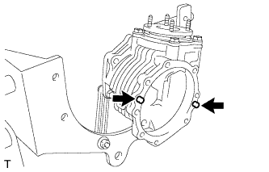 |
Remove the 2 transfer case straight pins from the transfer case.
| 14. Inspect Driven Pinion Preload |
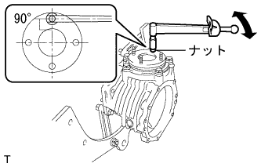 |
Install the nut to the stud bolt.
Using a torque wrench, inspect the turning torque of the driven pinion (driven pinion preload).
| 15. Remove Transfer Output Shaft |
 |
Remove the 5 bolts and remove the transfer output shaft assembly from the transfer case.
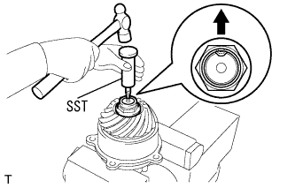 |
Secure the transfer output shaft assembly in a vise between aluminum plates.
Using SST and a hammer, unstake the nut.
Using a socket wrench (30mm), remove the nut.
| 16. Remove Transfer Driven Pinion |
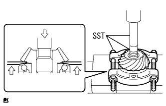 |
Using SST and a press, remove the transfer driven pinion from the transfer output shaft.
| 17. Remove Transfer Output Rear Shaft Dust Deflector |
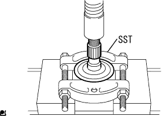 |
Using SST and a press, remove the dust deflector from the shaft.
| 18. Remove Transfer Driven Pinion Bearing FR |
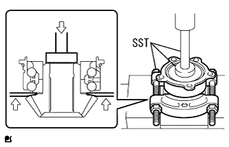 |
Using SST and a press, remove the transfer driven pinion bearing FR from the transfer driven pinion.
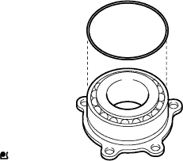 |
Remove the O-ring from the transfer driven pinion bearing FR.
| 19. Remove Transfer Output Shaft Washer |
 |
Remove the transfer output shaft washer from the transfer driven pinion.
| 20. Remove Ring Gear Mounting Case Bearing |
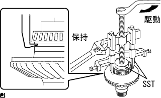 |
Using SST, remove the ring gear mounting case bearing (inner race) from the mounting case.
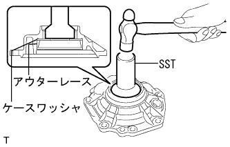 |
Using SST and a hammer, remove the ring gear mounting case bearing (outer race) from transfer case cover No.1.
Remove the ring gear mounting case washer from transfer case cover No.1.
| 21. Remove Ring Gear Mounting Case Bearing |
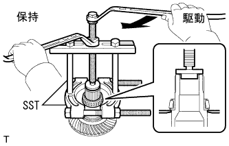 |
Using SST, remove the ring gear mounting case bearing (inner race) from the mounting case.
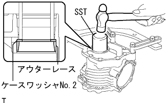 |
Using SST and a hammer, remove the ring gear mounting case bearing (outer race) from the transfer case.
Remove transfer ring gear mounting case washer No.2 from the transfer case.
| 22. Remove Shaft Snap Ring |
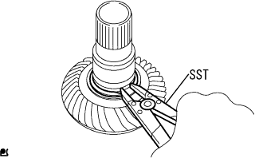 |
Using SST, remove the shaft snap ring.
| 23. Remove Transfer Ring Gear Mounting Case |
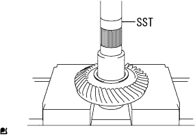 |
Using SST and a press, remove the transfer ring gear from the transfer ring gear mounting case.
| 24. Remove Breather Oil Deflector |
 |
Remove the 2 bolts and remove the breather oil deflector from the transfer case.
| 25. Remove Transfer Case Breather Plug |
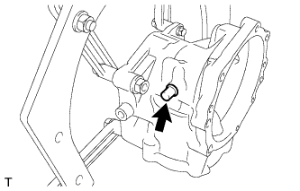 |
Using a chisel and hammer, lift the transfer case breather plug slightly.
Lightly pry with a flat-tip screwdriver to remove the transfer case breather plug from the transfer case.